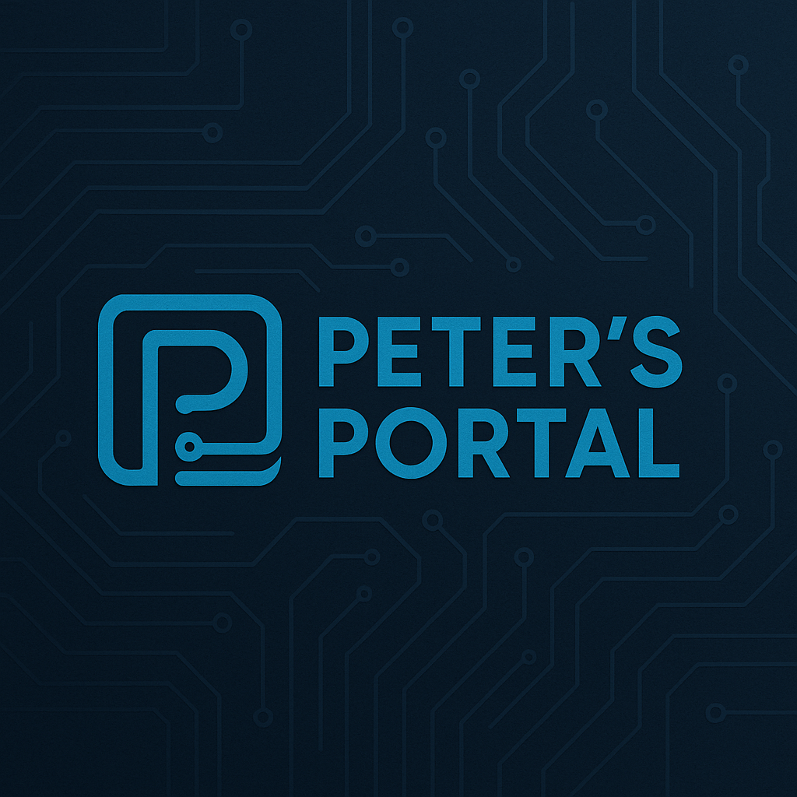

Welcome to Peter's Portal
Explore my projects, creations, and tech adventures.
Featured Sections
💻 Web Projects: Dive into my latest coding work using HTML, CSS, and Python. Each project reflects the skills I’m building as I grow into a professional web developer.
🧠 Learning Journey: Discover what I’ve learned through my BYU–Idaho courses, labs, and personal studies. I share takeaways, goals, and progress from each new challenge.
🥁 Creative Corner: A mix of tech and creativity — from drumline media and designs to personal branding projects that showcase my passion and style.
Highlights
- Hands-on web development experience
- Strong foundation in coding and design
- Creative integration of tech and music
My Recent Projects
🌐 Peter’s Portal Website
My personal website showcasing my projects, style, and creativity.
⚙️ Python Lab Apps
Simple yet powerful scripts that automate tasks and logic challenges.
💾 Data Dashboard
A clean HTML & CSS interface displaying user data visually.
🎨 Design Portfolio
Custom graphics, color palettes, and logo designs for web use.
🥁 Drumline Media
Videos, designs, and branding created for the BYU–Idaho Drumline.